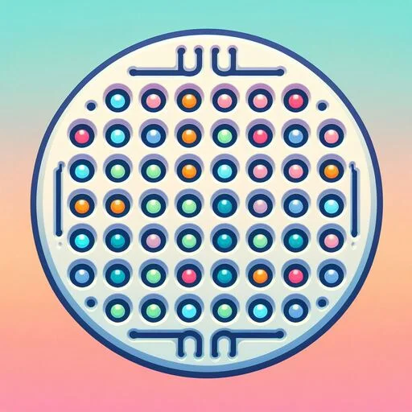

Android & iOS
Experiências consistentes nas duas plataformas.
Aplicativos & tecnologia
AS Software cria aplicativos multiplataforma e ferramentas para desenvolvedores, do primeiro conceito à publicação.
Experiências consistentes nas duas plataformas.
Integrações profundas sem abrir mão da agilidade.
Da ideia, UX e código até a publicação nas lojas.
Plugins publicados para fortalecer o ecossistema.
Aplicativos em destaque
Quatro experiências com propostas distintas — criação com IA, ciência, bem-estar e comunicação — desenvolvidas para Android e iOS.
Transforma descrições em vídeos e imagens com inteligência artificial, com opções de qualidade para diferentes ideias e formatos.

Um laboratório digital para planejar experimentos, analisar viabilidade celular por MTT e apoiar rotinas de contagem e plaqueamento.

Acompanha ciclo, sintomas, humor e previsões de forma acolhedora, mantendo os dados pessoais armazenados no próprio dispositivo.

Leva a programação da rádio comunitária 87,9 FM de Salvaterra, na Ilha de Marajó, para ouvintes em qualquer lugar.
Plugins Open Source no pub.dev
Conhecimento de plataforma transformado em componentes reutilizáveis para projetos Flutter.
Explorar o ecossistema ↗Android · iOS
Timeline nativa e contínua para vídeos e imagens, com preview em uma única textura Flutter, edição não destrutiva, áudio, transições e exportação MP4.
flutter pub add video_ultra_player2.0.5Android · iOS · macOS
Verificação local de compras e assinaturas com as APIs oficiais da App Store e do Google Play, sem exigir um servidor próprio para a validação.
flutter pub add verify_local_purchase1.1.0Open Source no GitHub
Brain Flows é um conjunto de skills para agentes de IA — Claude Code e Codex — que transforma cada mudança em um processo claro e retomável: mapear o projeto, aprovar o design, planejar e executar passo a passo.
Claude Code · Codex
O contexto e o progresso de cada mudança ficam versionados junto com o código, em docs/flow/ e docs/plan/ — nenhuma etapa depende do histórico da conversa.
/plugin marketplace add andrelucassvt/brain-flowsAnalisa a estrutura real do repositório e cria o mapa do projeto em docs/flow/.
Documenta como uma feature funciona de ponta a ponta: arquivos, ordem de execução e regras de negócio.
Explora a mudança, lê os flows relacionados e propõe um design que só vira código após aprovação.
Transforma o design aprovado em um plano acionável em docs/plan/, com fases e verificações.
Executa o plano uma tarefa por vez, verifica cada etapa e atualiza os flows afetados ao final.
Sobre o estúdio
André Salvador é o desenvolvedor à frente da AS Software, unindo visão de produto, engenharia e cuidado com a experiência para transformar necessidades reais em aplicativos bem resolvidos.
O trabalho vai de apps para pessoas e negócios a integrações nativas e plugins open source para o ecossistema Flutter — sempre com atenção ao que acontece dentro do código e ao que a pessoa percebe na tela.
Tem uma ideia?